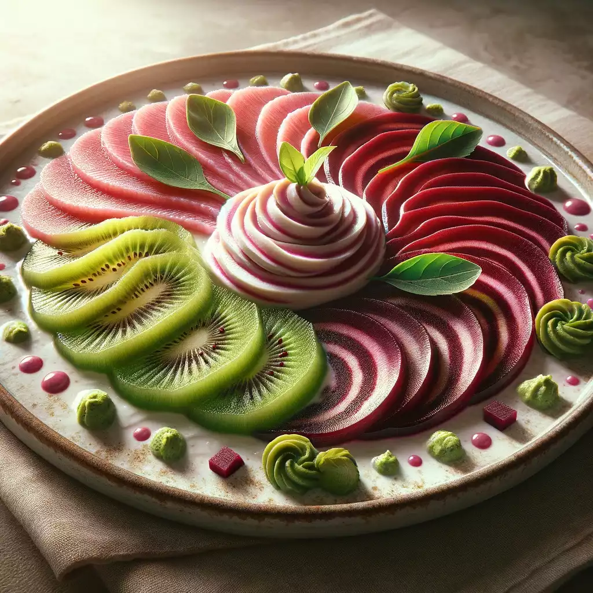

ENTRÉE :
1. Carpaccio de Kiwi et Betterave avec Crème de Wasabi
Durée totale: 15 minutes
Cette entrée est un mélange audacieux de douceur et d'épice, alliant la fraîcheur du fruit à la terre du légume racine, avec une touche épicée distinctive du wasabi.
2. Roulés d'Aubergine au Chèvre et à la Gelée de Framboise

Durée totale:30 minutes
Cette entrée combine la douceur de l'aubergine avec la richesse du fromage de chèvre et la touche sucrée et acidulée de la gelée de framboise, créant une expérience gustative unique et surprenante.
3. Tartare de Pastèque et Feta à la Menthe et Piment d'Espelette

Durée totale: 10 minutes
Cette entrée combine la douceur de la pastèque et le salé de la feta, relevée par la fraîcheur de la menthe et la légère chaleur du piment d'Espelette pour une touche originale et surprenante.